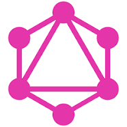
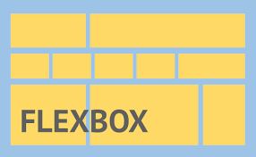
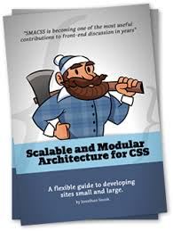
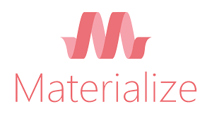
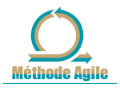
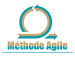

Ludwig Jedde
Saint Pierre sur Dives, Normandie
ludwigjedde.pro@gmail.com
07 77 86 02 35
Permis B + véhiculé
Compétences techniques :
Je pratique régulièrement :
 /  / 
Débutant / notions / initié :
 Python
Angular
Typescript
Méthode Agile
Python
Angular
Typescript
Méthode Agile
Réseaux :
https://www.linkedin.com/in/ludwigjeddehttps://github.com/LudwigJedde
Langues :


Développeur Web Front End
J'exerce aujourd'hui ce métier formidable avec une affinité plutôt tournée pour le Front-end mais avec un regard quand il le faut sur le Back-end.